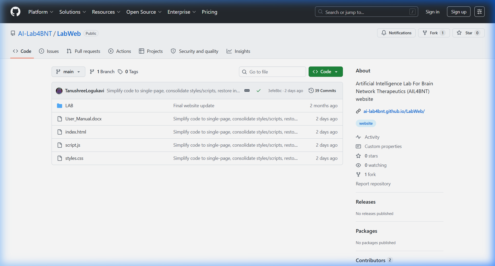
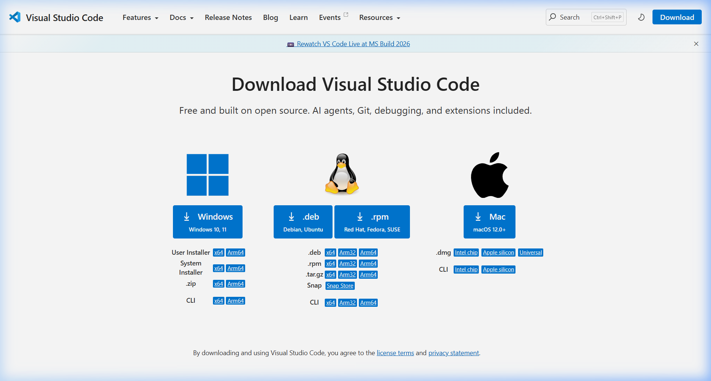
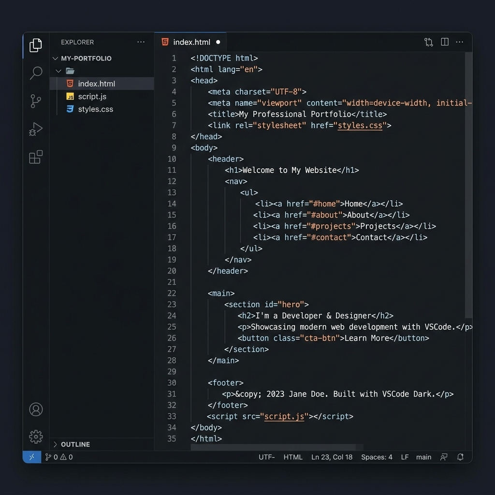
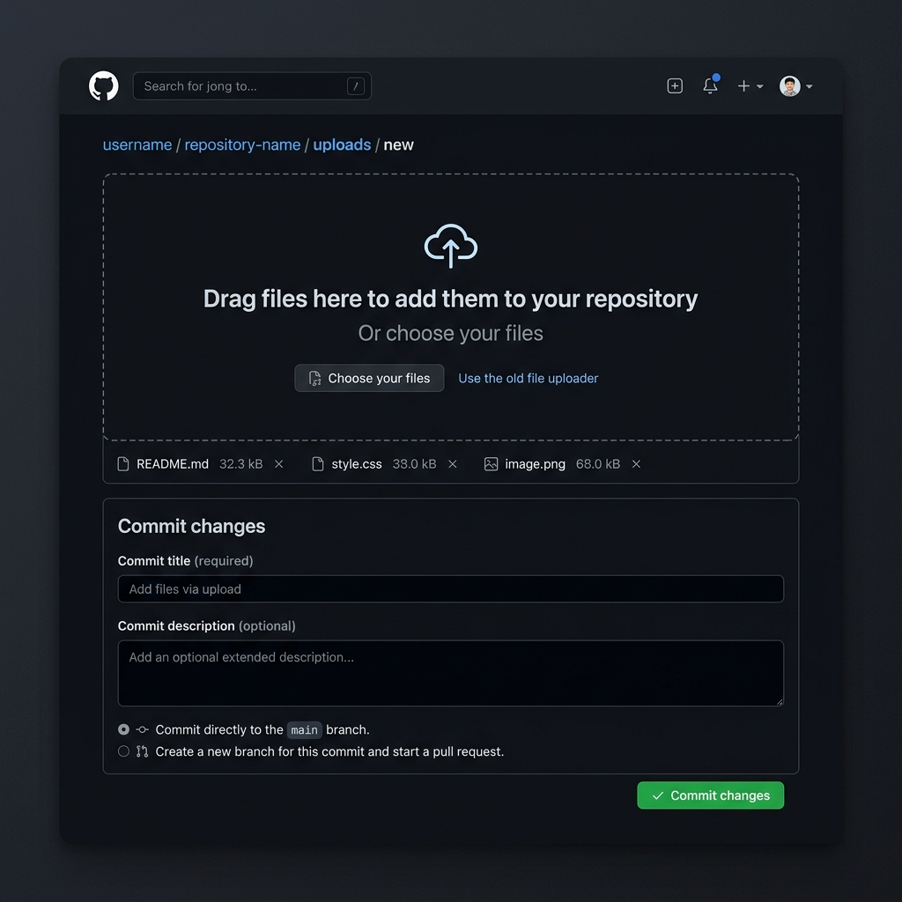

CNPN LAB WEBSITE CONTENT UPDATE MANUAL
1. Introduction
This user manual provides step-by-step instructions for non-programmers to update the content of the Clinical Neurophysiology & Precision Neuromodulation Lab (CNPN Lab) website. The site is designed so that all content (text, research themes, people profiles, recognition, and publications) is stored in a structured format at the top of a single JavaScript file named script.js. You do not need to edit any complex HTML or CSS layouts. By following this guide, you will be able to make changes and add new items easily.
2. General Rules for Non-Coders
When editing content, you are writing text inside JavaScript arrays or objects. JavaScript requires strict grammar rules. Breaking these rules will cause the website to display a blank page or stop functioning. Please follow these precautions:
- Always Make a Backup: Before making any changes to
script.js, copy it and save it asscript_backup.jsin a separate folder. If something goes wrong, copy-paste your backup file back to restore the site. - Double Quotes: All text must be wrapped inside double quotation marks. E.g.,
"My research text". If your text contains a quotation, use single quotes inside double quotes, e.g.,"The target is 'personalized' neuromodulation." - Commas are Crucial: Every item in a list must be separated by a comma. Missing or extra commas are the most common source of page load issues. E.g.,
[item1, item2, item3]. - Brackets and Braces must Match: Ensure that every opening bracket
[or curly brace{has a corresponding closing bracket]or curly brace}. - Use a Good Text Editor: Do NOT use Microsoft Word or basic Notepad to edit code. Use a free programmer's text editor like Visual Studio Code (VS Code). This will highlight code syntax and point out errors.
3. Tool Setup & Downloads
3.1 Downloading the Repository from GitHub
To get a copy of the lab website code on your computer:
- Open your browser and go to the repository: https://github.com/cn-pn/LabWeb
- Click the green Code button on the right-hand side of the page.
- Select Download ZIP from the dropdown options.
- Locate the downloaded file on your computer and extract it. This will create a folder containing all the website files.

3.2 Installing Visual Studio Code (VS Code)
- Open your web browser and go to: https://code.visualstudio.com/Download
- Click the blue Windows button to download the installer.
- Locate the downloaded file (e.g.,
VSCodeUserSetup-x64-xxxx.exe) and double-click to run the setup. - Accept the agreement and click Next.
- Critical Settings: On the Select Additional Tasks screen, ensure you check the following options:
- [x] Add "Open with Code" action to Windows Explorer file context menu
- [x] Add "Open with Code" action to Windows Explorer directory context menu
- [x] Register Code as an editor for supported file types
- [x] Add to PATH (requires shell restart)
- Click Next, then Install. Click Finish once setup is complete.

3.3 Opening the Project in VS Code
- Right-click the extracted folder (
LabWeb-main) in your file explorer, and select "Open with Code". - Alternatively, open VS Code, click File -> Open Folder... (or press
Ctrl+K Ctrl+O), navigate to the extracted folder, and click Select Folder.

4. Step-by-Step Website Content Editing
All collaborator details, fellows, PhD members, publications, and recognitions are dynamically managed in script.js. Open script.js in VS Code to make changes.
4.1 Updating Collaborators and Partners
The Collaborators & Partners section displays clinical, translational, and technical partners. They are defined in lists starting around line 197.
A. Core Collaborators (Lines 197–204)
Search for: const coreCollaborators = [
["Dr. Full Name", "Description | Institution Name", "https://profile-url.com"],B. Clinical & Translational Collaborators (Lines 206–210)
Search for: const translationalCollaborators = [
["Dr. Full Name", "Description | NIMHANS", "https://profile-url.com"],C. Logo Mappings for New Collaborators (Lines 212–256)
If you add a new collaborator, search for: function getCollaboratorLogoUrl. Under this function, map their name to a logo file in the Lab/brand/ folder:
if (collaboratorName === "Dr. Full Name") return "Lab/brand/my-custom-logo.png";D. Publication Clickable Link Mappings (Lines 280–311)
To make the collaborator's name clickable in the publications archive list, search for: const personLinks = [ and add:
["Full Name", "https://profile-url.com"],4.2 Updating the 'People' Section
The About Us section shows profile cards for the lab members.
A. Adding a Research Fellow (Lines 153–179)
Search for: const fellows = [. Copy and paste this template inside the array:
{
name: "Dr. Full Name",
text: "Short summary paragraph of work in the lab.",
isExpanded: true,
expandedBio: "Biographical details paragraph 1.",
expandedBio2: "Biographical details paragraph 2.",
expandedBio3: "Biographical details paragraph 3.",
expandedBio4: "Biographical details paragraph 4.",
links: [
["LinkedIn", "https://linkedin.com/in/..."],
["Github", "https://github.com/..."]
],
images: ["Lab/rf_tanushree/profile_slide1.jpg", "Lab/rf_tanushree/profile_slide2.jpg"],
interests: [
["Painting 🎨", "A creative hobby description."]
]
},B. Adding PhD & Other Members (Lines 181–195)
Search for: const interns = [. Copy and paste this template inside the array:
{
name: "Member Name",
text: "Description of their education, research focus and roles.",
images: ["Lab/intern_members/profile_photo.JPG"]
},4.3 Updating Research Themes & Spotlight Publications
- Search for:
const research = [(Line 31). - Inside each theme, you can update
slides: [ ... ]pointing to images inside theLab/research_themes/folder, or edit the plain textpublications: [ ... ]array list.
4.4 Updating 'Recognition' Section
The recognitions are stored in lists starting at line 388 (const recognitions = { ... }).
Templates inside plenaryLectures, invitedTalks, conferencePresentations, or mediaRecognition:
{
year: "2026",
title: "Presentation title or award name",
event: "Name of the conference or media outlet",
topic: "Topic details (optional)",
icon: "🎙️"
},4.5 Updating 'Publications' Section
Publications are grouped by year in const publications = [ (Line 415).
Add strings into the items: [ ... ] array under the appropriate year:
"1. Authors. Paper title. Journal name. Year. DOI Link",5. Previewing & Testing Changes Locally
- Save changes in VS Code by pressing
Ctrl+S. - Navigate to your local folder, and double-click
index.htmlto open it in a web browser. - Always perform a Hard Refresh to override cached files and load your new
script.jsupdates:- Windows/Linux: Press
Ctrl + F5orShift + F5 - macOS: Press
Cmd + Shift + R
- Windows/Linux: Press
6. Uploading and Publishing Changes to GitHub
Once you have verified that your edits work locally, upload them to publish the site live.
Method A: Manual Web Upload (Drag-and-Drop)
This is the easiest method and requires no command-line tools:
- Open your browser and go to: https://github.com/cn-pn/LabWeb
- Click on the gray "Add file" button near the top right and select "Upload files".
- Drag and drop your modified files (e.g.
script.js) into the box. - Scroll down to the "Commit changes" section.
- Enter a brief description (e.g. "Updated collaborator links"), select "Commit directly to the main branch", and click the green "Commit changes" button.

Method B: Command-Line Upload (VS Code Terminal)
For faster and professional deployment, run these Git commands inside VS Code:
- Open the Terminal in VS Code: Click Terminal -> New Terminal in the top menu or press
Ctrl + `` `(Control and Backtick). - Copy, paste, and run the following commands sequentially inside the terminal:
# Change the remote to the cn-pn repository
git remote set-url origin https://github.com/cn-pn/LabWeb.git
# Stage your changes
git add .
# Commit your changes
git commit -m "Uploading LabWeb project from VS Code"
# Push to the main branch
git push -u origin main- If prompted, sign in via GitHub in the popup browser window to authenticate the upload.
Method C: Source Control panel in VS Code (Git GUI)
- Click the Source Control (git branch) icon in the left-hand sidebar or press
Ctrl+Shift+G. - Hover over the modified files and click the
+icon to stage them. - Type your commit message in the top textbox.
- Click the checkmark (Commit) button at the top.
- Click "Sync Changes" or "Push" to upload.
7. Managing Images and Sliders
All website assets are structured inside the Lab/ folder into dedicated subfolders for clean organization and easy updates. Always name your files logically before placing them in the subfolders.
7.1 Reorganized Asset Directories
The Lab/ directory has the following subfolder structure:
Lab/brand/— Contains logos (logo_transparent.png,logo.png), partner institution logos (NTU.png,jhu-logo.png,NIMHANS.jpeg,SA.jpeg), and background illustrations (logo_background.jpeg,AIIMS.jpg).Lab/pi_sagarika/— Contains profile slideshow images of the Principal Investigator (Dr. Sagarika Bhattacharjee) namedsagarika1.jpegtosagarika6.jpeg.Lab/rf_tanushree/— Contains profile slideshow images of the Research Fellow (Tanushree L) namedtanushree1.jpgtotanushree4.jpg.Lab/intern_members/— Contains photos of interns and trainee members (e.g.,varsha.jpg).Lab/research_themes/— Contains slides and diagrams shown in research theme popups, structured by theme (e.g.theme1_slide1.png,theme2_slide1.jpeg).Lab/testimonials/— Contains patient slides (testimonial_slide1.jpegtotestimonial_slide10.jpeg) and showcase highlights (highlight_slide1.jpgtohighlight_slide5.jpg).Lab/showcase/— Contains the main showcase slide images for the hero carousel (showcase_slide1.jpegtoshowcase_slide5.jpeg).
7.2 Replacing and Adding Images in Sliders
The website utilizes dynamic image sliders that read file pathways from script.js arrays. Below is a guide to updating each slider.
A. Home Showcase Slider (startLabSlides)
Images are stored in Lab/showcase/ and defined in startLabSlides around line 378 inside script.js:
- To replace an image: Overwrite the target file (e.g.
showcase_slide3.jpeg) inLab/showcase/with a new photo using the same filename. - To add a new image: Save your image in
Lab/showcase/(e.g.,showcase_slide6.jpeg) and add it to the array inscript.js:"Lab/showcase/showcase_slide6.jpeg",
B. Research Theme Sliders (research[index].slides)
Images are stored in Lab/research_themes/ and defined in the research themes array at line 31 in script.js:
- To add a slide: Place the image inside
Lab/research_themes/(e.g.theme1_slide7.png) and add a slide object to the theme'sslidesarray:{ src: "Lab/research_themes/theme1_slide7.png", alt: "Description", caption: "Caption" },
C. Testimonial Sliders (testimonialSlides & testimonialLeftSlides)
Images are stored in Lab/testimonials/ and defined around line 357 in script.js:
- To add or edit slides: Modify the
testimonialSlidesortestimonialLeftSlidesarrays with their corresponding paths:"Lab/testimonials/testimonial_slide11.jpeg",
D. PI Profile Slider (piSliderHtml)
Dr. Sagarika's profile images are in Lab/pi_sagarika/ and are mapped as HTML tags in piSliderHtml template around line 957 in script.js:
- To add a picture to the slideshow: Place the new photo in
Lab/pi_sagarika/(e.g.sagarika7.jpeg). Then, openscript.js, search forpiSliderHtml, and add a new image element inside the slider wrapper container:<img src="Lab/pi_sagarika/sagarika7.jpeg" alt="PI image 7" class="pi-slider-image" style="width: 100%; height: 100%; display: none; object-fit: contain; transition: opacity 0.5s ease; position: absolute; top: 0; left: 0;">
E. Research Fellow Profile Slider (fellows[0].images)
Tanushree's profile images are in Lab/rf_tanushree/ and mapped inside the fellows list around line 167 in script.js:
- To update her slider: Save your new files in
Lab/rf_tanushree/(e.g.tanushree5.jpg) and add the path to the images array:images: ["Lab/rf_tanushree/tanushree1.jpg", ..., "Lab/rf_tanushree/tanushree5.jpg"],